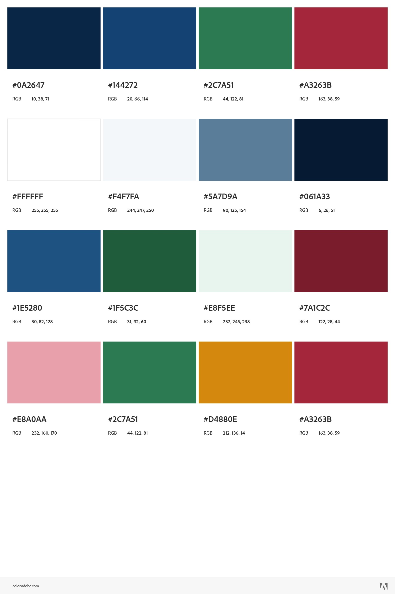
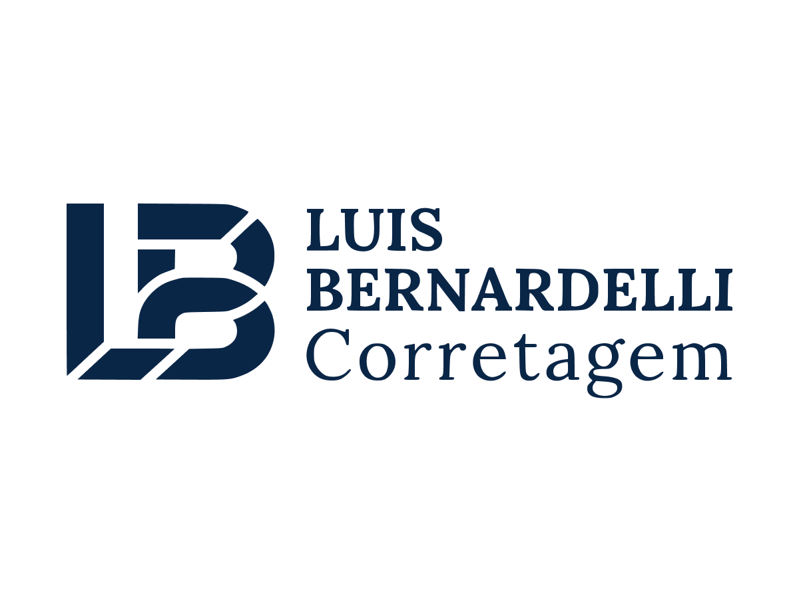
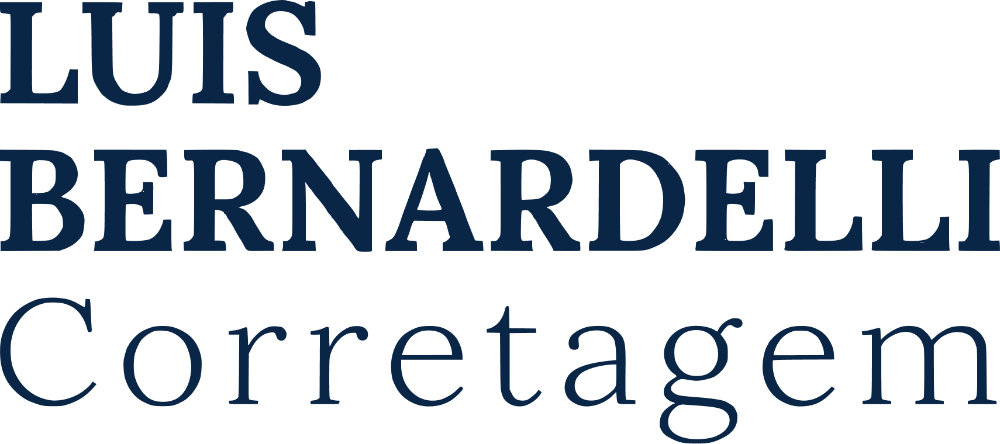
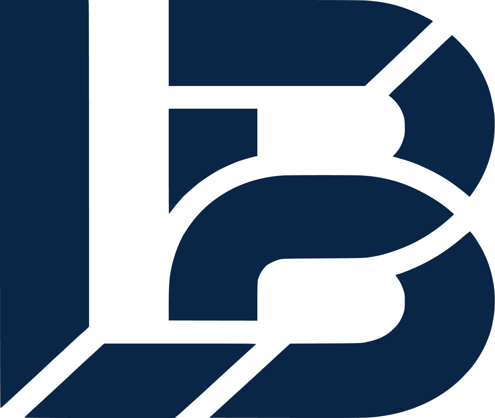

Voltar aos cases
Branding Completo
Luis Bernardelli
Uma marca construída para transformar credibilidade em autoridade digital. Do posicionamento estratégico à identidade visual, aplicações e ecossistema completo de conteúdo.
Branding Completo
Uma marca construída para transformar credibilidade em autoridade digital. Do posicionamento estratégico à identidade visual, aplicações e ecossistema completo de conteúdo.
Luis Bernardelli é consultor de consórcios vinculado à Ademicon, uma das maiores administradoras do Brasil. Atende pessoas físicas, investidores e brasileiros no exterior com foco em consórcios imobiliários e veiculares.
O desafio era claro: construir uma marca que transmitisse credibilidade profissional desde o primeiro contato digital e gerasse leads qualificados pelo Instagram, num segmento onde a maioria dos consultores se apresenta como vendedor, não como parceiro estratégico.
Antes de qualquer elemento visual, o projeto mapeou as três camadas do mercado e identificou onde Luis se diferencia de forma real e sustentável.
Foca em fechar cotas. Compete por preço. Entrega o contrato e desaparece.
Conhece o produto, mas limita a conversa às características do consórcio.
Entende o objetivo antes de apresentar qualquer produto. É onde Luis está.
Luis acredita que toda pessoa tem o direito de chegar a algum lugar. A distância entre a realidade financeira de hoje e o patrimônio que se pode construir é menor do que parece, desde que exista orientação competente e personalizada.
O arquétipo central definido foi O Sábio — aquele que acredita que a verdade liberta. Comunicação clara, técnica e acolhedora. Referência arquetípica: Warren Buffett.
Fala com autoridade sobre consórcios e finanças, sem jargão desnecessário.
Age com transparência e coloca o interesse do cliente acima da meta de vendas.
Profissional sem ser frio, técnico sem ser distante, sério sem ser entediante.
Marinho profundo como dominante — seriedade e solidez patrimonial. Verde como acento pessoal de Luis, conectando crescimento e prosperidade. Bordô como acento institucional da Ademicon. Uma paleta que comunica confiança antes de qualquer palavra ser dita.
DM Serif Display nos títulos para elegância serifada nos momentos de impacto. DM Sans no corpo, garantindo clareza em qualquer formato digital. O contraste entre as duas tipografias reflete a dualidade da marca: expertise técnica com comunicação humana.

Fusão geométrica das letras L e B com o conceito visual de crescimento e solidez patrimonial. O corte diagonal em negativo cria dinamismo sem comprometer a seriedade. O sistema oferece versões completa, wordmark e ícone em quatro cromias.

Versão Principal
Versão Positiva


Ícone — Marinho
Ícone — Off-whiteCada ponto de contato foi desenhado para reforçar a mesma percepção: este é um profissional de alto nível. Do uniforme ao cartão de visita, a marca comunica consistência antes mesmo de qualquer palavra ser dita.


O sistema de sinalização leva a identidade para os ambientes físicos onde Luis atua. Totens e outdoor reforçam a percepção de marca sólida e profissional antes mesmo de qualquer contato pessoal.


A estratégia digital transforma o Instagram em canal de geração de leads qualificados. Posts de feed, stories e carrosseis educativos compõem um sistema visual coerente, sempre alinhado ao posicionamento de consultor de alavancagem patrimonial.
O carrossel educativo usa fundo marinho na capa, slides em off-white para leitura confortável e CTA em verde — guiando a leitura e terminando sempre em conversão.


Próximo passo
Cada projeto começa com uma conversa. Me conta sobre o seu negócio, sem compromisso.